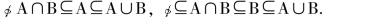
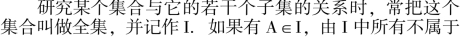
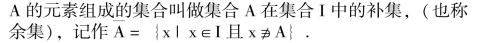
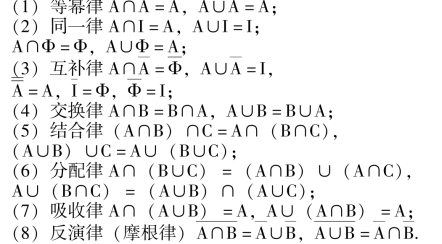

集合与简易逻辑
【集合】
集合是一个原始概念，只能做描述性的说明—— “任意一组对象的全体形成一个集合”.
【元素】
构成集合的每一个对象叫做集合的一个元素.
集合里的元素应具备下列三个特性:
①元素的确定性: 构成集合的对象必须明确，任何一个元素x 与集合A，x 属于A 与x 不属于A，二者必居其一且仅居其一.例如“比较厚的书”、“年长的人” 等都不能构成集合，因此它们所描述的对象不准确.又如“小于5的自然数” 则能构成一个集合，因为它有确定的元素1、2、3、4.
②元素的互异性: 一个集合里不允许有相同的元素重复出现.例如{a，a，b，c} 不是集合的正确表示法，这个集合只能表示为{a，b，c}.
③元素的无序性: 集合里元素的构成，与其元素的顺序是无关的.如{a、b、c} 与{c，a、b} 表示相同的集合.然而为了更清楚地表示集合里元素的结构，往往把集合里的元素按一定的顺序列举出来，以免将某些元素遗漏.例如表示出20 以内的质数，往往写成{2，3，5，7，11，13，17，19}，而不是杂乱无章地把它们列出来.
【集合的表示法】
①列举法: 将集合中的元素一一列举出来，并写在大括号“ {}” 内.如{1，2，3，4，5} 等.
②描述法: 把集合中元素的共同属性描述出来，写在大括号“ {}” 内，例如，{小于10 的自然数}.用描述法表示集合也常常在大括号内先写上这个集合的元素的一般形式，再划一条竖线“ ｜” (或冒号“:”，或分号“；”)并在它的右边写上这个集合的元素的公共属性，如{x ｜ －3≤x<1} (或{x: －3≤x <1}，或{x；－3≤x <1})，表示在－3 和1 之间(包括－3 在内) 的所有实数组成的集合.
③用区间表示集合: 如(a，b) 表示a，b 之间的所有实数.
④用文氏图(一个圆或一条封闭曲线) 表示集合(只是一种示意)，用它表示集合间的关系时很直观，便于理解.
【空集】
不含任何元素的集合.记作Φ.
【子集】
如果集合A 的任何一个元素都是集合B 的元素，就称集合A 是集合B 的子集(可写成命题形式: “若x∈A，则x∈B”).记作A⊆B (读作A 包含于B) 或B⊇A (B 包含A).
【真子集】
如果A 是B 的子集，并且B 中至少有一个元素不属于A，那么集合A 叫做集合B 的真子集.记作A⊂B (或B⊃A)，读作A 真包含于B (或B 真包含A).
(1) 若A⊆B 且B⊆A，则A ＝B.
(2) “A⊂B” 与“A⊆B 且A≠B” 是等价的.
(3) “A⊆B” 是指“A⊂B” 与“A ＝B” 二者间有且只有一种情况成立.由此，符号“⊆” 与“≤” 之间，既有本质的区别(分别表示两个集合与两实数之间的关系)，又有相似之处(AB 是AB 与A ＝B 二者有且只有一种情况成立；a≤b 是指a <b 或a ＝b 二者有且只有一种情况成立).
(4) 空集是任何集合的子集: ⊆A.空集是任何非空集合的真子集⊆B (B 为非空集合).
(5) 子集与真子集均具有传递性:
①若A⊆B 且B⊆C，则A⊆C；
②若A⊂B 且B⊂C 则A⊂C.对于②证明如下:
∵A⊂B，∴任意x∈A 都有x∈B，又∵BC，∴x∈C
即A⊆C，又∵A⊂B，∴存在y∈B 且y∈A，又∵BC∴y∈C.
即y∈C 且y∉A，∴A⊂C.
【交集】
由所有属于集合A 且属于集合B 的元素(即A，B 的公共元素) 组成的集合叫做A 与B 的交集，记作A∩B，即A∩B ＝ {x ｜x∈A 且x∈B}.
【并集】
由所有属于集合A 或属于集合B 的元素组成的集合叫做A 与B 的并集.记作A∪B，即A∪B ＝ {x ｜x∈A 或x∈B}.
两个集合A 与B 的交集和并集有以下的性质:

【全集和补集】


【集合的运算】
交集、并集、补集都是集合的简单运算.
【集合的运算律】
集合的交、并、补集运算满足以下运算律:

【区间】
两个实数a 与b (a<b) 之间的所有实数组成的集合，常常用区间(a，b) 来表示，不包含a、b 时称为开区间，记作(a，b)，若包含a 和b 时，称闭区间，记作[a，b]，若只包含a 而不包含b，或只包含b 而不包含a，则称为半开半闭区间，分别记作[a，b) 或(a，b].
【命题】
可以判断真假的语句叫做命题
【逻辑联结词】
( “或”、“且”、“非”)、简单命题(不含有逻辑联结词的命题) 与复合命题(由简单命题和逻辑联结词“或”、“且”、“非” 构成的命题) 构成复合命题的形式: p 或q(记作“p ∨q”)；p 且q (记作“p ∧q”)；非p (记作“┑q”)
【 “或”、“且”、“非” 的真值判断】
(1) “非p” 形式复合命题的真假与p 的真假相反；
(2) “p 且q” 形式复合命题当p 与q 同为真时为真，其他情况时为假；
(3) “p 或q” 形式复合命题当p 与q 同为假时为假，其他情况时为真
【四种命题的形式】
原命题: 若p 则q；逆命题: 若q 则p；否命题: 若┑p 则┑q；逆否命题: 若p 则┑p 若┑q 则┑p
【四种命题的转换】
(1) 交换原命题的条件和结论，所得的命题是逆命题；
(2) 同时否定原命题的条件和结论，所得的命题是否命题；
(3) 交换原命题的条件和结论，并且同时否定，所得的命题是逆否命题
【四种命题之间的相互关系】
一个命题的真假与其他三个命题的真假有如下三条关系: (原命题逆否命题) ①原命题为真，它的逆命题不一定为真.②原命题为真，它的否命题不一定为真.③原命题为真，它的逆否命题一定为真
【反证法】
从命题结论的反面出发(假设)，引出(与已知、公理、定理…) 矛盾，从而否定假设证明原命题成立，这样的证明方法叫做反证法
【充分条件与必要条件】
如果已知p⇒q，那么我们说，p 是q 的充分条件，q是p 的必要条件.
【充要条件】
如果已知p⇔q，那么我们说，p 是q 的充要条件.